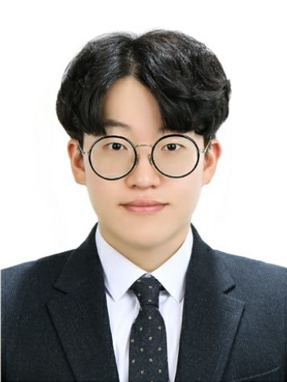
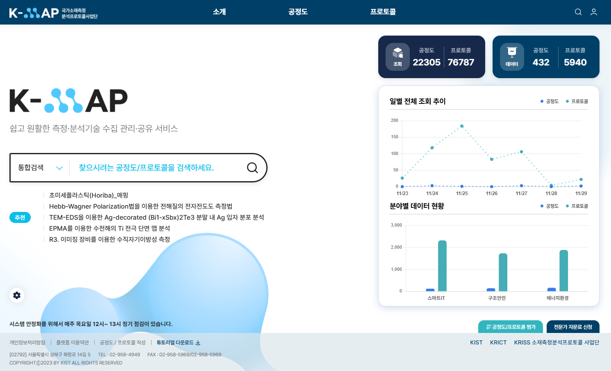

황현우 | Fullstack Developer

Contact
Email: qqq4472@gmail.com
Phone: 010-5687-5657
GitHub: github.com/Hwang-97
Birth: 1997.05.28
Location: 서울시 노원구 중계동
3년 9개월간 SI 프로젝트를 수행하며 기획부터 인프라 구축, 개발, 배포까지 전 과정을 단독으로 수행한 풀스택 개발자입니다.
서버 설치부터 Docker 기반 배포 자동화까지, 백엔드부터 프론트엔드까지 전 영역을 경험했습니다. 고객사와의 지속적인 신뢰 관계를 바탕으로 2년 이상 안정적인 서비스를 운영하고 있으며, 최근에는 AI/ML 기술을 활용한 서비스 개발에도 관심을 가지고 학습 중입니다.
Work Experience
사이버라인 | 대리
2022.03 ~ 현재 (3년 9개월)
SI 및 전자연구노트 솔루션 전문 기업 (40~50명 규모)
- 프로젝트 기획, 풀스택 개발 (백엔드/프론트엔드)
- 서버 설치부터 Docker 기반 배포 환경 구축
- Jenkins, Portainer를 활용한 CI/CD 파이프라인 구축
- 고객사 협의 및 프로젝트 일정 관리
Major Projects
KIST 국가소재측정 프로토콜 개선 및 유지보수 (KMAP)
2023.07 ~ 현재 (2년 5개월) | 풀스택 개발 및 인프라 구축 전담
Service: analysis.kist.re.kr
연구자들이 소재 측정 프로토콜을 시각적으로 작성하고 공유하는 플랫폼. 선행 연구 데이터를 참고하여 연구 시간을 단축하는 것이 목표.
핵심 성과
- 2년 이상 지속적인 고객사 신뢰 확보 및 안정적 서비스 운영
- 단독으로 전체 프로세스 수행: 기획, 개발, 인프라, 배포까지 전 과정 담당
- Docker 기반 자동 배포 환경 구축
주요 업무
인프라 구축
- 서버 랙 설치, LAN/광케이블 설치, 네트워크 구성 (IP 할당, 방화벽)
- RAID 구성 및 NAS 세팅, 3중 백업 구조 구축
- Docker Compose 기반 컨테이너 분리 (Frontend, Backend, DB, File Storage)
- Jenkins를 통한 자동 배포, Portainer로 컨테이너 관리
핵심 기능 개발
- 공정도/프로토콜 에디터 개선 및 안정화
- 노드 기반 자동 Wiki 페이지 생성 시스템
- 노드 사전 관리 시스템 (데이터 표준화)
- 문서 평가 시스템 (공개 전 심사 프로세스)
- Solr 검색 엔진 도입 및 최적화
Frontend: Vue.js, FreeMarker Template
Database: MySQL
Search: Solr
Infra: Ubuntu, Docker, Jenkins, Nginx, RAID

KIST 소재 허브 구축 사업 (M3D Hub)
2025.09 ~ 현재 (3개월, KMAP과 병행) | 풀스택 개발 및 인프라 구축
Service: analysis.kist.re.kr/m3dhub
소재 연구 데이터를 통합하고 시각화하는 허브 플랫폼 구축
핵심 성과
- 신규 Hub 웹사이트 구축 + 기존 Hub 3개 동시 관리
- KMAP과 병행하며 짧은 기간 내 안정적인 서비스 구축
- SAM2 (Facebook AI) 이미지 분석 기능 연계 경험
주요 업무
- M3D Hub 신규 웹사이트 구축 (Spring Boot + Vue.js)
- 데이터 통합 및 시각화 기능 개발
- 외부 AI 서비스 연계 (에너지연구원 SAM2)
- Docker 기반 배포 환경 구축 및 Jenkins CI/CD 파이프라인 구축
Frontend: Vue.js
Database: MySQL
Infra: Ubuntu, Docker, Jenkins
AI: SAM2 (Segment Anything Model 2) 연계

운전면허증 진위확인 서비스 유지보수
2022.03 ~ 2022.12 (10개월) | 서비스 안정화 및 유지보수
금융권과 경찰청 DB를 연동한 고트래픽 서비스 (일 처리량 수십만 건)
핵심 성과
1. 서비스 다운타임 제로화
- Bash Shell + Cron 기반 자동 모니터링 및 복구 시스템 구축
- 큐 상태, 메모리, 프로세스별 리소스 모니터링
- 임계치 초과 시 자동 재기동 + 문자 알림 발송
- 결과: 서비스 완전 중단 사례 제로 달성
2. 논리적 오류 발견 및 수정
- 신규 발급 면허증 즉시 진위확인 실패 문제 해결
- 실시간 특징점 추출 로직 활성화로 즉시 확인 가능하게 개선
- 데이터 검증 로직 개선
- 상태 변경에 따른 검증 프로세스 보완
3. 레거시 코드 분석
- 10년 이상 된 Pro*C 소스 코드 분석 및 개선
Database: Oracle, iBatis
API: SOAP API
OS: Unix
기타: 알체라, 한국인식산업 얼굴 인식 라이브러리
Other Projects
산림과학연구원 PMS 테스트 및 버그 수정
2023.01 ~ 2023.03 (3개월) | QA 및 버그 수정
- Excel 테스트 문서 양식 제작
- 학명 이탤릭체 미적용, 연관 데이터 미삭제 등 다수 버그 발견 및 수정
- 시스템 안정성 향상
건설기술연구원 PMS 개발
2023.03 ~ 2023.05 (3개월) | 풀스택 개발
- JavaScript 코드 래핑 및 커스터마이징 기법 학습
- 프리랜서 개발자와의 협업 경험
산림과학연구원 PMS DB Migration
2023.05 ~ 2023.06 (2개월) | DB Migration
- Oracle → PostgreSQL 전환
- MyBatis XML 쿼리 전면 수정
철도기술연구원 철도사건 전처리 자동화
2025.07 ~ 2025.09 (3개월) | 데이터 전처리 및 라벨링
- YAML 기반 전처리 규칙 설계
- 대량 데이터 수작업 라벨링 (원인, 조치 등)
- 2-depth MLP 모델 개발 지원
Side Projects
RAG 기반 프로토콜 추천 시스템
2024년 | KMAP 축적 데이터 활용 AI 서비스
KMAP에 축적된 프로토콜 데이터를 활용하여 사용자 질의에 맞는 프로토콜을 추천하고 설명하는 RAG 시스템 개발
핵심 구현
- 데이터 전처리: HTML → Markdown 변환, 이미지 UUID 매핑 및 캡션 관리
- Vector DB: Qdrant 활용, 메타데이터 필터링으로 프로토콜별 그룹화
- 재정렬: BM25 알고리즘으로 키워드 기반 재정렬
- LLM 배포: V100 GPU x3 환경에서 nvidia-docker로 컨테이너 배포
Qdrant (Vector DB), MySQL, SQLAlchemy
BM25, Docker, nvidia-docker
멀티턴 챗봇 개발
2024년 | 사내 AI 스터디
MSA 구조로 자연스러운 멀티턴 대화를 지원하는 챗봇 시스템 개발
핵심 구현
- MSA 설계: Platform, AI, Frontend, Middleware로 서비스 분리
- 대화 이력 관리: 첫 턴 + 최근 N턴 유지 + 점진적 요약 전략
- ChatGPT 수준의 대화 품질 구현
OpenSearch (대화 이력), Docker
AI/ML Activities
Dacon 경진대회
운수종사자 인지적 특성 데이터를 활용한 교통사고 위험 예측
- 2025.10 | 상위 26% 달성
- LightGBM, CatBoost, XGBoost Stacking 앙상블
- Optuna 하이퍼파라미터 튜닝
제3회 국민대학교 AI빅데이터 분석 경진대회
- 2025.11 | 시계열 예측 과제
Education
한국방송통신대학교
컴퓨터과학과 학사 | 2022.03 ~ 2024.08
한림성심대학교
정보통신과 전문학사 | 2016.03 ~ 2020.02
Certifications
- 정보통신산업기사
- SQL 개발자 (SQLD)
- 네트워크관리사 2급
- 육상무선통신사
- MOS (Microsoft Office Specialist)
Tech Stack
Backend
Java Spring Boot Spring Framework Python FastAPI Django
Frontend
Vue.js React JavaScript HTML/CSS FreeMarker JSP
Database
MySQL PostgreSQL Oracle
Data Access
JPA MyBatis IBatis SQLAlchemy
DevOps & Infra
Docker Jenkins Nginx Ubuntu RAID NAS
Search & AI/ML
Qdrant Solr OpenSearch PyTorch Transformers LightGBM Optuna
Version Control
Git (GitHub, GitLab) SVN
Core Competencies
Full Stack Development
백엔드부터 프론트엔드까지 전 영역 개발 가능. 단독으로 프로젝트 전체 개발 경험 다수.
Infrastructure & DevOps
서버 설치부터 Docker 기반 배포 자동화까지. Jenkins, Portainer를 활용한 CI/CD 파이프라인 구축.
Problem Solving
고트래픽 환경에서 서비스 다운타임 제로화, 레거시 코드 분석 및 논리적 오류 발견.
Project Management
고객사 협의부터 기획, 개발, 배포까지 전 과정 단독 수행. 2년 이상 지속적 신뢰 확보.
Fast Learning
Spring Boot + Vue.js를 2개월 만에 학습 후 실전 투입. 새로운 기술 스택 빠르게 습득.
"새로운 기술에 도전하고, 빠르게 성장하는 개발자"
새로운 기술을 두려워하지 않고, 맡은 프로젝트는 끝까지 책임지는 개발자입니다.